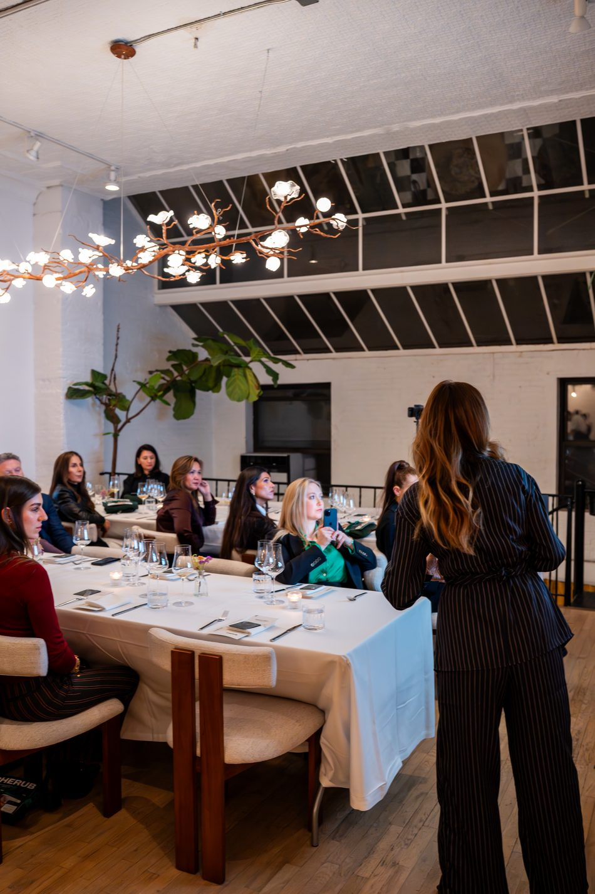
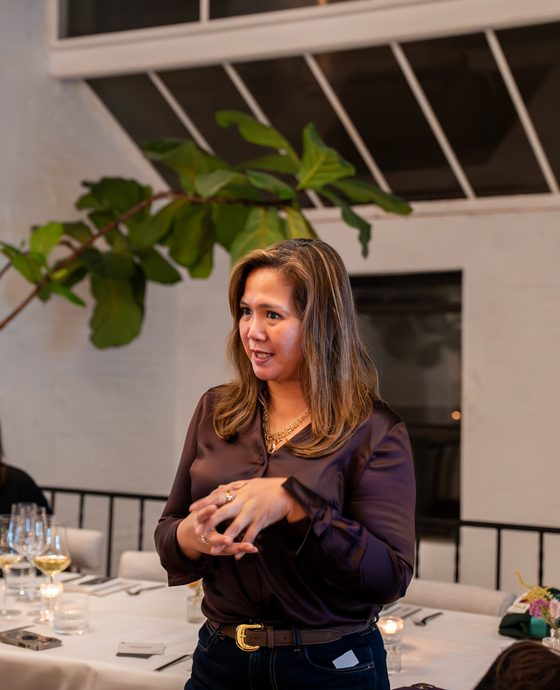
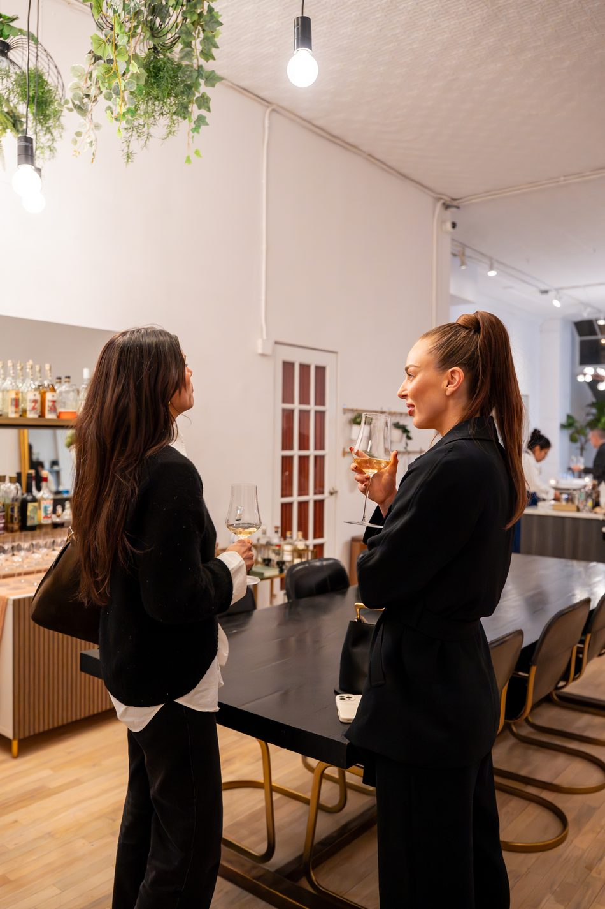
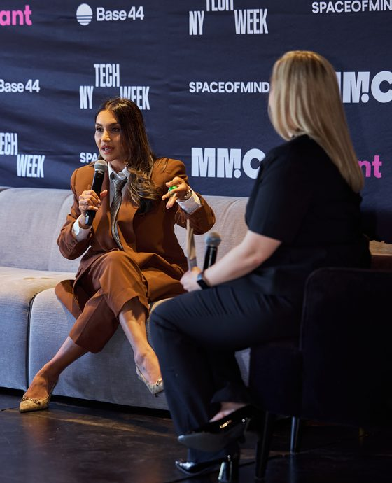
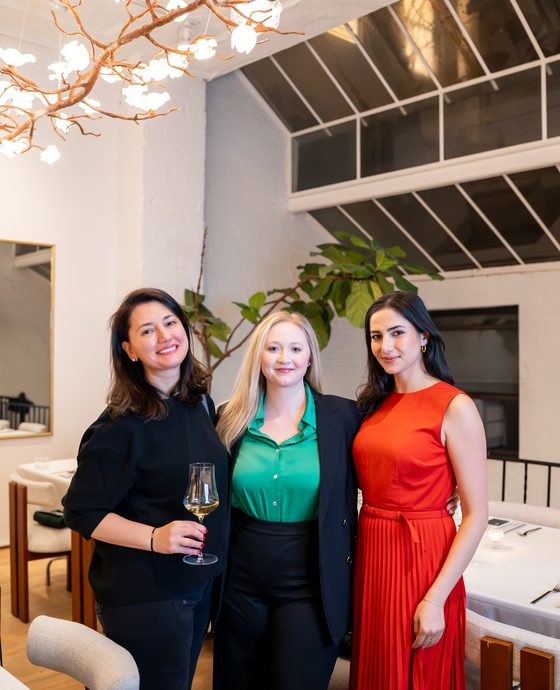

Indra KlavinsKeynote Speaker & Executive AdvisorThe biggest benefit of attending this workshop was that Ella made working with AI visible, quite literally. We were able to witness what working with AI looks like in real life.
A lot of people talk about AI agents, AI employees, and automated workflows, but it’s rare to see what that really means in action. In just the first few minutes, I learned something I hadn’t seen explained before: the real differences between free, paid, and Pro plans for tools like Claude and ChatGPT. The difference is not just about having better models or more memory.
What helped me even more was seeing what an AI-first workflow really looks like. Ella showed us her own tech setup and explained that she thinks about AI agents the same way she thinks about building a business. Each agent has a role, responsibilities, and a purpose. That way of thinking made sense to me right away.
If you’re interested in AI but feel lost in the jargon or unsure where to begin, this workshop is one of the clearest starting points I’ve found. I walked away with useful knowledge, a better way to think about AI, and, most importantly, the confidence to get started.







